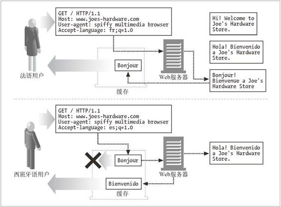
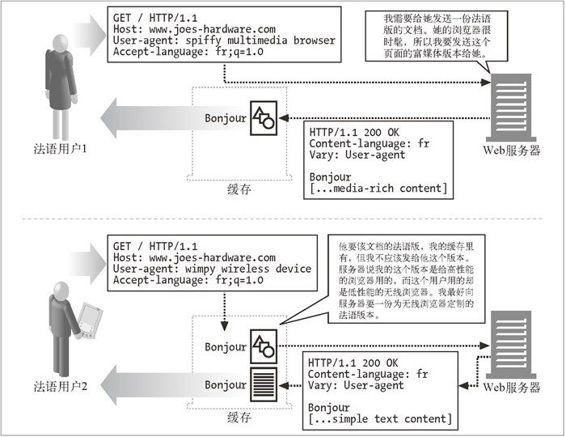

17.4 透明协商
透明协商机制试图从服务器上去除服务器驱动协商所需的负载，并用中间代理来代表客户端以使与客户端的报文交换最小化。假定代理了解客户端的预期，这样就可以代表客户端与服务器协商（在客户端请求内容的时候，代理已经收到了客户端的预期）。为了支持透明内容协商，服务器必须有能力告知代理，服务器需要检查哪些请求首部，以便对客户端的请求进行最佳匹配。HTTP/1.1 规范中没有定义任何透明协商机制，但定义了 Vary 首部。服务器在响应中发送了 Vary 首部，以告知中间节点需要使用哪些请求首部进行内容协商。
代理缓存可以为通过单个 URL 访问的文档保存不同的副本。如果服务器把它们的决策过程传给缓存，这些代理就能代表服务器与客户端进行协商。缓存同时也是进行内容转码的好地方，因为部署在缓存里的通用转码器能对任意服务器，而不仅仅是一台服务器传来的内容进行转码。图 17-3 中展示了缓存对内容进行转码的情况，本章后面会更详细地探讨。
17.4.1 进行缓存与备用候选
对内容进行缓存的时候是假设内容以后还可以重用。然而，为了确保对客户端请求回送的是正确的已缓存响应，缓存必须应用服务器在回送响应时所用到的大部分决策逻辑。
前一节描述了客户端发送的 Accept 首部集，以及为了给每条请求选择最佳的响应，服务器使用的与这些首部集匹配的相应实体首部集。缓存也必须使用相同的首部集来决定回送哪个已缓存的响应。
图 17-1 展示了涉及缓存的正确及错误的操作序列。缓存把第一个请求转发给服务器，并存储其响应。对于第二个请求，缓存根据 URL 查找到了匹配的文档。但是，这份文档是法语版的，而请求者想要的是西班牙语版的。如果缓存只是把文档的法语版本发给请求者的话，它就犯了错误。

图 17-1 缓存根据内容协商首部发送给客户端正确的响应
因此，缓存也应该把第二条请求转发给服务器，并保存该 URL 的响应与“备用候选”响应。缓存现在就保存了同一个 URL 的两份不同的文档，与服务器上一样。这些不同的版本称为变体（variant）或备用候选（alternate）。内容协商可看成是为客户端请求选择最合适变体的过程。
17.4.2 Vary首部
这里是浏览器和服务器发送的一些典型的请求及响应首部：
GET http://www.joes-hardware.com/ HTTP/1.0
Proxy-Connection: Keep-Alive
User-Agent: Mozilla/4.73 [en] (WinNT; U)
Host: www.joes-hardware.com
Accept: image/gif, image/x-xbitmap, image/jpeg, image/pjpeg, image/
png, */*
Accept-Encoding: gzip
Accept-Language: en, pdf
Accept-Charset: iso-8859-1, *, utf-8
HTTP/1.1 200 OK
Date: Sun, 10 Dec 2000 22:13:40 GMT
Server: Apache/1.3.12 OpenSSL/0.9.5a (Unix) FrontPage/4.0.4.3
Last-Modified: Fri, 05 May 2000 04:42:52 GMT
Etag: "1b7ddf-48-3912514c"
Accept-Ranges: Bytes
Content-Length: 72
Connection: close
Content-Type: text/html
然而，如果服务器的决策不是依据 Accept 首部集，而是比如 User-Agent 首部的话，情况会如何？这不像听起来这么极端。例如，服务器可能知道老版本的浏览器不支持 JavaScript 语言，因此可能会回送不包含 JavaScript 的页面版本。如果服务器是根据其他首部来决定发送哪个页面的话，缓存必须知道这些首部是什么，这样才能在选择回送的页面时做出同样的逻辑判断。
HTTP 的 Vary 响应首部中列出了所有客户端请求首部，服务器可用这些首部来选择文档或产生定制的内容（在常规的内容协商首部集之外的内容）。例如，若所提供的文档取决于 User-Agent 首部，Vary 首部就必须包含 User-Agent。
当新的请求到达时，缓存会根据内容协商首部集来寻找最佳匹配。但在把文档提供给客户端之前，它必须检查服务器有没有在已缓存响应中发送 Vary 首部。如果有 Vary 首部，那么新请求中那些首部的值必须与旧的已缓存请求里相应的首部相同。因为服务器可能会根据客户端请求的首部来改变响应，为了实现透明协商，缓存必须为每个已缓存变体保存客户端请求首部和相应的服务器响应首部，参见图 17-2。

图 17-2 如果服务器根据特定的请求首部集来选择变体，缓存必须在发送回缓存的响应之前，检查常规的内容协商首部集和这些请求首部
如果某服务器的 Vary 首部看起来像下面这样，大量不同的 User-Agent 和 Cookie 值将会产生非常多的变体：
Vary: User-Agent, Cookie
缓存必须为每个变体保存其相应的文档版本。当缓存执行查找时，首先会对内容协商首部集进行内容匹配，然后比较请求的变体与缓存的变体。如果无法匹配，缓存就从原始服务器获取文档。